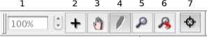

To zoom in on an image hold down the right mouse button and move the zoom rectangle over the area of interest. If your mouse only has a single button, you can select Zoom mode on the Mode Toolbar.
The overall zoom of all the slices can also be altered by controlling the Zoom SpinBox on the Mode Toolbar.
To pan an image, hold down the middle mouse button and move the mouse. This will slide the image in any direction. To pan without a multiple button mouse, select Pan mode on the Mode Toolbar.
To reset all the slices to their original state, with no pan or zoom, press the press the unzoom button on the Mode Toolbar.
|
 |